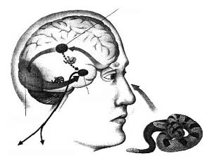

2-Duygusal Korsanlığın Anatomisi
Yaşam düşünenler için bir komedi, hissedenler içinse bir trajedidir.
Horace Walpole
1963 yılında, Rahip Martin Luther King Jr.’ın Washington’daki insan hakları yürüyüşünde “Bir Hayalim Var” diye başlayan konuşmasını yaptığı sıcak bir ağustos gününün akşamıydı. Aynı gün eroin parası bulmak için yüzden fazla ev soymuş ve üç yıllık mahkûmiyetten sonra şartlı tahliye edilmiş olan kaşarlanmış hırsız Richard Robles bir eve daha girmeye karar verdi. Robles sonradan, suç işlemeyi bırakmak istediğini, ancak kız arkadaşı ve üç yaşındaki kızları için paraya ihtiyacı olduğunu söyleyecekti.
O gün girdiği evde iki genç kadın, Newsweek dergisinde araştırmacı olarak çalışan 21 yaşındaki Janice Wylie ve ilkokul öğretmeni 23 yaşındaki Emily Hoffert yaşıyordu. Robles, soymak için New York’un fiyakalı kuzey doğu yakasından bir ev seçerken içeride kimse olmadığını sanıyordu, ancak Wylie evdeydi. Robles kızı bıçakla tehdit ederek bağladı. Evden çıkarken Hoffert eve geldi. Rahatça kaçabilmek için Robles onu da bağladı.
Robles’in yıllar sonra anlattığına göre, Hoffert’ı bağlarken, Janice Wylie bu suçtan yakayı sıyıramayacağını, yüzünü hatırlayıp kendisini polise yakalatacağını söyleyerek onu tehdit etmişti. Bunun son işi olacağına dair kendi kendine verdiği sözü unutup paniğe kapılan Robles, kontrolünü tamamen kaybetmişti. Bir gazoz şişesini yakalayıp bayıltıncaya kadar çılgınca kafalarına vurmuş, sonra bir öfke ve korku nöbetine kapılarak eline geçirdiği mutfak bıçağını tekrar tekrar vücutlarına saplamıştı. 25 yıl sonra bu olaya dönüp bakan Robles ağlamaklı bir halde, “Aklımı kaçırmıştım. Adeta beynim patlamıştı,” diyordu.
Bugüne kadar Robles’in, dizginleyemediği o birkaç dakikalık öfkesinden pişmanlık duymak için çok zamanı oldu. Bu satırlar yazıldığı sırada kendisi son otuz yıldır “Meslek Sahibi Kızlar Cinayeti” diye bilinen suç yüzünden hâlâ hapiste bulunuyor.
Böylesi duygusal patlamalar sinirlerin korsanlığıdır. Bulgulara göre, o anlarda limbik beyindeki bir merkez acil durum mesajı verip beynin geri kalan kısımlarını da o duruma odaklar. Korsanlık bir anda oluşan bir durumdur ve düşünen beyin, yani neokorteks, yapılanın doğru bir hareket olup olmadığı bir yana, daha ne olup bittiğini kestiremeden bir dizi tepkilerin başlaması demektir. Bu korsanlık anlarının en önemli özelliği, kişinin o anı atlattıktan sonra kendisinin de neye uğradığını bilememesidir.
Sinirlerin korsanlığı “Meslek Sahibi Kızlar Cinayeti”ndeki gibi münferit, hunharca cinayetlerle sonuçlanan korkunç olaylar olmak zorunda değildir. Bu kadar trajik sonuçlara yol açmasa da, hemen hemen aynı şiddetteki olayları sık sık yaşıyoruz. Kendinizi kaybettiğiniz son durumu, örneğin karınıza, kızınıza ya da başka bir aracın şoförüne vurduğunuz ve sonradan düşündüğünüzde aslında o kadarına gerek olmadığını hissettiğiniz anı düşünün. Büyük olasılıkla o da bir korsanlıktı, yani sinirlerin hâkimiyeti ele aldığı ve limbik beyindeki amigdala denilen bir merkezden kaynaklanan bir durumdu.
Bütün limbik korsanlıklar böyle sıkıntı vermez. Bir şakanın bir kahkaha tufanına yol açması da limbik bir tepkidir. Yoğun mutluluk anlarında da aynı tepkiyi görebiliriz. Örneğin, Olimpiyatlarda altın madalya için yarıştığı buz pateni sürat dalında üst üste moral bozucu başarısızlıklara uğrayan Dan Jansen’ın, 1994 Norveç Kış Olimpiyatları’nın 1000 metre yarışında ölmek üzere olan kız kardeşine söz verdiği altın madalyayı kazanması üzerine, karısı heyecan ve mutluluktan fenalaşıp pist kenarındaki doktorlar tarafından acilen müdahale altına alınmıştı.
HER TÜRLÜ TUTKUNUN BEŞİĞİ
Amigdala (Yunancada “badem” anlamına gelen sözcükten), insanlarda limbik halkanın altına yakın, beyin sapının üzerinde bulunan ve birbiriyle bağlantılı yapılardan oluşan badem şeklinde bir kütledir. Her biri beynin bir tarafında olmak üzere, başın yan kısmına yakın iki amigdala vardır. İnsan amigdalası evrimsel kuzenlerimiz primatlara kıyasla daha büyüktür.
Hipokampus ile amigdala, ilkel “burun beynin” iki ana parçasıdır ve evrim boyunca önce korteksin daha sonra da neokorteksin oluşumuna yol açmıştır. Limbik yapılar o günden bugüne beynin öğrenme ve hatırlama süreçlerinin büyük kısmını gerçekleştirmektedir; amigdala ise duygusal durumların uzmanıdır. Amigdala beynin geri kalan kısmından ayrılsa, olayların duygusal anlamını değerlendirmekte inanılmaz bir yetersizlik, hatta “duygusal körlük” denilen durum ortaya çıkar.
Duygusal ağırlığı kaybolmuş ilişkiler, etkisini yitirir. Yoğun nöbetleri kontrol altına almak için ameliyatla amigdalası alınmış genç bir adam insanlarla ilgisini tamamen kesmiş, herkesten uzak, yapayalnız yaşamayı tercih etmişti. Çok iyi konuşabildiği halde yakın arkadaşlarını, ailesini, annesini bile tanıyamaz hale geldi ve bu kayıtsızlığı karşısında onların çektiği acıya da duyarsız kaldı. Amigdalası olmadığı için hissetmeyi, hissettikleri hakkında bir şeyler hissetmeyi unutmuş gibiydi.13Amigdala, duygusal belleğin ve başlı başına anlamın deposudur; amigdalasız yaşam, kişisel anlamlarından soyutlanmış bir yaşamdır.
Yalnız şefkat değil, tüm tutkular amigdalaya bağlıdır. Amigdalası alınmış ya da hasar görmüş hayvanlar korkuyu ve öfkeyi, yarışma ya da işbirliği güdüsünü yitirirler ve sosyal düzendeki yerleri hakkında fikirleri kalmaz; duygu körelmiş ya da yok olmuştur. İnsanlara özgü bir duygusal işaret olan gözyaşı, amigdala ve yakınındaki cingulate gyrus denilen yapı tarafından başlatılır; kucaklanma, okşanma ve teselli, beynin bu merkezlerini etkileyerek hıçkırıkları durdurur. Amigdala yoksa, dindirilecek üzüntü gözyaşları da yoktur.
New York Sinir Bilimleri Merkezi’nde çalışan Joseph LeDoux adlı bir nörolog, duygusal beyinde amigdalanın ana rolünü ilk keşfeden kişidir.14LeDoux, çalışmakta olan beynin haritasını daha önce bilinmeyen bir kesinlikte çıkaran yenilikçi yöntem ve teknolojileri getiren ve böylece önceki nesil bilim adamlarının çözülemez sandıkları gizemleri açığa çıkaran son kuşak nörologlardan biridir. Duygusal beynin devreleriyle ilgili bulguları, limbik sistem hakkında uzun zamandır beslenen bir kanıyı çürütüp amigdalayı eylemin merkezine yerleştirmiş, diğer limbik yapılara da çok farklı roller vermiştir.15
LeDoux’nun araştırması, düşünen beyin yani neokorteks henüz karar aşamasındayken, amigdalanın yaptığımız şeyi nasıl denetim altına aldığını açıklıyor. Birazdan da göreceğimiz gibi, duygusal zekânın merkezinde amigdalanın işleyişi ve neokorteksle olan ilişkisi yatmaktadır.
SİNİRSEL ALARM
Duyguların zihinsel yaşam içindeki gücünü anlamaya çalışırken en fazla merak konusu olan, hırsla harekete geçip her şey yatıştıktan sonra pişmanlık duyduğumuz o anlardır; buradaki soru nasıl bu kadar kolayca mantıksız olabildiğimizdir. Örneğin, erkek arkadaşıyla öğle yemeği yiyip gününü onunla geçirmek üzere arabasıyla iki saat yol kat ederek Boston’a giden genç bir kadını düşünelim. Yemek esnasında erkek ona aylardır beklediği hediyeyi, İspanya’dan gelen zor bulunur bir sanat eserini verir. Ancak genç kadının mutluluğu, yemekten sonra görmek istediği bir filme gitme önerisine karşılık adamın antrenmanından dolayı günün geri kalan kısmını onunla geçiremeyeceğini söylemesi üzerine yıkılır. Genç kadın şaşkınlık ve acı içinde ağlayarak kafeyi terk eder, giderken de düşünmeden hediyeyi çöp kutusuna atar. Aylar sonra olayı düşündüğünde pişmanlık duyduğu şey çekip gitmesi değil, o baskıyı yitirmiş olmasıdır.
İşte bu tür fevri duyguların akla üstün geldiği anlar amigdalanın yeni keşfedilen esas rolünü gözler önüne seriyor. Duyu organlarından gelen sinyaller, amigdalanın her türlü sıkıntılı deneyimi taramasını sağlar. Bu da amigdalayı, psikolojik gözcü konumuyla ruh dünyamızda merkezi bir yere yerleştirir. Amigdala her durumu, her algıyı sorgular, ancak bunu en ilkel bir soru biçimiyle, “Bu benim nefret ettiğim bir şey mi? Bana zarar verir mi? Benim korktuğum bir şey mi?” şeklinde yapar. Eğer bu soruların cevabı bir şekilde “evet” ise, amigdala adeta bir sinirsel alarm gibi anında tepki verir ve bir kriz var mesajını beynin geri kalan kısımlarına iletir.
Beyin mimarisinde amigdalanın yeri, bir evdeki güvenlik sistemi alarm vermeye başladığı anda itfaiyeye, polise, komşuya haber vererek acil durum çağrılarına cevap veren operatörlerden oluşan güvenlik şirketine benzetebilir.
Örneğin bir korku sinyali alındığında beynin her yerine acil mesajlar iletilir: ‘savaş ya da kaç’ hormonları salgılanmaya başlar, hareket merkezleri uyarılır, kardiovasküler sistem, kaslar ve hazım sistemi çalışmaya başlar.16Amigdalanın diğer devreleri ise acil durum hormonu olan norepinefrin salgılayarak, duyuları daha fazla uyarmak dahil, beynin anahtar bölgelerindeki tepkiselliği artırır, yani beyni tamamen hassaslaştırır. Amigdaladan gelen ek sinyaller, beyin sapına yüze korkulu bir ifade vermesini, kasların gereksiz hareketleri dondurmasını, nabzı ve tansiyonu yükseltmesini, nefes almayı ise yavaşlatmasını emreder. Diğer sinyaller ise dikkati korkunun kaynağında toplar ve kasları uygun bir biçimde tepki vermeye hazırlar. Aynı anda korteksin bellek sistemleri bir düşünce oluşturmadan önce, böylesi bir acil durumla daha önce karşılaşıp karşılaşılmadığını araştırır.
Bunlar, amigdalanın beyinde yönettiği alanlarda oluşan dikkatle koordine edilmiş bir dizi değişikliğin yalnızca bir kısmıdır (daha detaylı bilgi için C ekine bakınız). Amigdala, yaygın sinir bağlantıları ağı sayesinde duygusal bir aciliyet durumunda, akılcı zihin dahil olmak üzere, beynin büyük bir bölümünü kontrol eder ve yönlendirir.
DUYGUSAL GÖZCÜ
Bir arkadaş, tatilde İngiltere’ye gittiğini ve kanal kıyısındaki bir kafede öğle yemeği yediğini anlatıyor. Daha sonra kanala inen taş merdivenlerde dolaşırken aniden korkudan donmuş bir şekilde suya bakan bir kız görmüş. Nedenini anlayamadan, paltosu ve kravatıyla suya atlamış. Ancak suya girdiği anda, kızın şok olmuş bir halde suya düşmüş küçük bir çocuğa bakakaldığını anlayıp çocuğu kurtarmış.
Nedenini anlayamadan onu suya atlamaya iten neydi? Büyük olasılıkla, amigdalasıydı.
Son on yılın duygularla ilgili en önemli keşiflerinden biri olan LeDoux’nun çalışması, beyin mimarisinin amigdalaya duygusal bir gözcü olarak, beyne korsanlık yaptırabilecek ayrıcalıklı bir konumu nasıl verdiğini ortaya çıkardı.17Yaptığı araştırma, göz ya da kulaktan gelen duyu sinyallerinin beyinde önce talamusa, oradan da, tek bir sinapsla, amigdalaya ulaştığını gösterdi. Talamustan bir ikinci sinyal ise düşünen beyin neokortekse gidiyordu. Bu dallanma, amigdalanın, bilgiyi beyin devrelerinin çeşitli düzeylerinde değerlendirdikten sonra tamamen algılayan, son olarak da daha ince ayarlı tepkisini başlatan neokorteksten önce tepki verebilmesini sağlar.
LeDoux’nun araştırması duygusal yaşamı anlamak açısından devrim niteliğinde bir önem taşır, çünkü bu, duyguların neokorteksi atlayan sinir yollarını irdeleyen ilk çalışmadır. Doğrudan amigdalaya ulaşan bu duygular bizim en ilkel ve en güçlü hislerimizi kapsıyor; işte bu devre, duyguların gücünü ve akla olan üstünlüğünü çok iyi açıklıyor.
Nörolojide geleneksel görüşe göre göz, kulak ve diğer duyu organları, sinyalleri talamusa gönderir, buradan neokorteksin duyuları işleyen duyarlı alanlarına ulaşan sinyaller birleşir ve algıladığımız şekliyle cisimleri oluşturur. Beynin her bir cismin ne olduğunu ve varlığının ne anlama geldiğini kavrayabilmesi için, sinyaller anlamlarına göre sınıflandırılır. Eski kurama göre sinyaller neokorteksten limbik beyne gönderiliyor, oradan da uygun tepki beyne ve bedenin geri kalan kısmına yayılıyordu. Bu çoğunlukla böyledir; ancak LeDoux, kortekse giden büyük nöron topluluğunun yanı sıra küçük bir nöron demetinin talamustan dosdoğru amigdalaya yöneldiğini bulguladı. Bu küçük ve daha kısa yol –adeta bir sinirsel arka yol– amigdalanın duyulardan gelen sinyalleri doğrudan almasını ve neokorteks tarafından tamamen kaydedilmeden önce bir tepki başlatmasını sağlıyor.
Bu buluş amigdalanın tamamen neokorteksten gelen sinyallere dayanarak duygusal tepkiler geliştirdiği inancını çürütmektedir. Amigdala ile neokorteks arasında paralel bir yansıtıcı devre oluşsa bile, bu kestirme yol sayesinde amigdala duygusal bir tepkiyi başlatabiliyor. Neokorteks yavaşça, ancak donanımlı bir biçimde daha ince bir tepki üretme planını oluştururken, amigdala bizi hemen harekete geçirebiliyor.
LeDoux, hayvanların korku tepkisi üzerine yaptığı araştırma sayesinde duyguların geçtiği yollar hakkındaki bilinen görüşü tepetaklak etmiştir. Önemli bir deneyinde, farelerin işitsel korteksini işlevsiz kıldıktan sonra onları elektrik şokla birlikte gelen bir sese maruz bırakmıştır. Neokortekslerine kaydedilemediği halde, fareler sesten korkmayı çabucak öğrenmiştir. Ses kulaktan dosdoğru talamusa, oradan da amigdalaya ulaşarak daha üst yolları atlamıştır. Kısacası fareler üst düzey bir korteks faaliyeti olmadan duygusal bir tepki vermeyi öğrenmişlerdir. Amigdala kendi başına farelerdeki korkuyu algılamış, anımsamış ve sergilemiştir.
LeDoux bana, “Anatomik olarak, duygusal sistem neokorteksten bağımsız işleyebilir,” demişti. “Bazı duygusal tepkiler ve duygusal anılar bilinçli ve bilişsel hiçbir katkı olmadan oluşabilir.” Talamusla neokorteks arasındaki kestirme yol neokorteksi tamamen atladığı için, amigdala nedenini pek kavrayamadan harekete geçirdiğimiz anıları ve tepki repertuarını barındırabiliyor. Bu atlama, amigdalanın tam farkında olmadığımız bazı duygusal izlenimleri ve anıları saklayabilmesini sağlıyor. Sözgelimi, şaşırtıcı bir deneyde insanların, kendilerine bir an gösterildiği için gördüklerinin bilincine varamadıkları garip geometrik şekilleri sonradan seçebilmelerini açıklayan, LeDoux’ya göre, amigdalanın bellek üzerindeki bu gizli gücüdür.18
Diğer araştırmalar şunu göstermiştir: Bir şeyi algıladığımız ilk birkaç milisaniye içinde bilinçsizce onun ne olduğunu anlamakla kalmayıp ondan hoşlanıp hoşlanmadığımıza da karar verebiliyoruz; bu “bilişsel bilinçsizlik” sadece gördüğümüzün kimliğini fark etmemizi değil, onun hakkında bir fikir edinmemizi de sağlıyor.19Duygularımızın akılcı zihinden bağımsız olarak görüş edinebilen kendilerine özgü bir zihinleri var.

SAVAŞ YA DA KAÇ TEPKİSİ
Nabız ve tansiyon yükselir.
Geniş kaslar çabuk hareket için hazırlanır.
Görsel sinyal öncelikle retinadan talamusa ulaşır ve orada beyin diline çevrilir. Mesajın büyük bir kısmı buradan görsel kortekse ulaşır, anlamı analiz edilir ve uygun tepki belirlenir; tepki duygusalsa, duygu merkezlerini harekete geçirmek için amigdalaya sinyal gönderilir. Ancak ilk sinyalin daha ufak bir bölümü, daha hızlı bir aktarımla talamustan dosdoğru amigdalaya gidip daha çabuk (ancak daha az kesin) bir tepkiye yol açar. Böylece kortikal merkezler ne olup bittiğini daha tam anlayamadan, amigdala duygusal bir tepkiyi başlatabilir.
DUYGUSAL BELLEK UZMANI
Bu bilinçsiz izlenimler duygusal anılardır; biriktikleri yer ise amigdaladır. LeDoux’nun ve diğer nörologların araştırmaları, uzun zamandır limbik sistemin temel yapısı olarak bilinen hipokampusun duygusal tepkilerden çok, algılanan biçimlerin kaydedilip anlamlandırılmasıyla ilgili olduğunu öne sürüyor. Hipokampusun esas katkısı, duygusal anlam açısından hayati olan yoğun bir bağlam belleği sağlamaktır; sözgelimi hayvanat bahçesindekiyle arka bahçenizdeki ayı arasındaki farkı algılayan, hipokampustur.
Hipokampus kuru gerçekleri hatırlarken, amigdala o gerçeklerle bağlantılı olan duygusal çeşniyi kaydedip saklar. İki şeritli bir yolda öndeki arabayı geçmeye çalışırken kıl payı bir çarpışmadan kurtulursak, hipokampus yolun hangi kısmında bulunduğumuz, kiminle olduğumuz, diğer arabanın neye benzediği gibi olayla ilgili ayrıntıları kaydeder. Ancak sonradan ne zaman aynı şekilde bir arabayı geçmeye çalışsak, tedirginliğe kapılmamızı sağlayacak olan amigdaladır. LeDoux’nun bana dediği gibi, “Bir yüzün kuzenimizin olup olmadığını ayırt eden hipokampustur. Ondan pek hoşlanmadığınızı ekleyen ise amigdaladır.”
Beyin, duygusal anıların kaydedilmesini sağlamak için basit ama kurnazca bir yöntem kullanır: Bedenle ilgili hayati tehlikeler karşısında savaşmaya ya da kaçmaya yönelten nörokimyasal uyarıcı sistem o anı tüm canlılığıyla belleğe işler.20Stres altındayken (veya kaygı, hatta mutluluğun getirdiği yoğun heyecan hissedildiğinde) beyinden böbrek üstündeki adrenal bezlerine uzanan bir sinir, bedeni acil duruma hazırlayan epinefrin ve norepinefrin salgılanmasına yol açar. Bu hormonlar vagus sinirindeki alıcıları harekete geçirir; vagus siniri kalp atışlarını düzenlemek için beyinden mesaj taşırken, aynı zamanda epinefrin ve norepinefrinden gelen sinyalleri de beyne geri taşır. Bu sinyallerin beyinde gittiği ana nokta amigdaladır; bunlar olayın anısını güçlendirmek için beyindeki diğer alanları uyarmak amacıyla amigdaladaki nöronları harekete geçirir.
Amigdalanın uyarılması, diğer duygusal uyarılma anlarının bellekte daha da kuvvetli bir şekilde yer etmesini sağlar. Bu nedenle de, örneğin ilk kez biriyle çıktığımızda nereye gittiğimizi, ya da uzay mekiği Challenger infilak ettiğinde ne yapıyor olduğumuzu hatırlamaya daha yatkın oluruz. Amigdala ne kadar şiddetli uyarılırsa, olay o kadar güçlü bir biçimde yer eder; yaşamımızda bizi en fazla heyecanlandıran ya da korkutan olaylar, en silinmez anılarımız arasında yer alır. Bu da aslında, beyinde iki bellek sistemi bulunduğu anlamına gelir; biri sıradan olaylar, diğeri ise duygusal açıdan yüklü olanlar için. Duygusal anılar için özel bir sistem olması evrim açısından son derece anlamlıdır, hayvanların kendilerini tehdit eden ya da hoşlarına giden olaylar hakkında canlı anılara sahip olmalarını sağlar. Ancak duygusal anılar şimdiki zamanı yanlış yönlendirebilir.
GEÇERSİZ SİNİRSEL ALARMLAR
Böylesi sinirsel alarmların bir dezavantajı, amigdalanın gönderdiği acil mesajın –özellikle de insanların yaşadığı bu değişken sosyal dünyada– sık sık değilse de zaman zaman geçersiz olmasıdır. Duygusal belleğin saklandığı yer olan amigdala, deneyimleri tarar ve şimdi olanı geçmiştekiyle karşılaştırır. Karşılaştırma yöntemi ise bağlantı kurmaktır: şimdiki durumun ana unsurlarından biri geçmiştekine benziyorsa, buna “aynısı” diyebilir; işte bu yüzden bu devre oldukça dikkatsizdir: Bir şey tam olarak kesinleşmeden harekete geçer. Bugün olup bitenlere, uzun süre önce geçerli olan bir tarzda; bugünkine çok az benzeyen, ama amigdalayı uyaracak kadar yakın olaylardan öğrenilmiş düşünceler, duygular, tepkilerle karşılık vermemiz için çılgınca talimatlar yağdırır.
Savaş zamanı sardığı korkunç yaralardan dolayı sarsılmış olan eski bir ordu hemşiresi, dolapta çocuğunun sakladığı pis bezden gelen kötü kokuyu duyduğunda, aniden savaş alanında yaşadığı korku, iğrenme ve panik karışımını yıllar sonra tekrar yaşamıştı. Amigdalanın acil durum ilan etmesi için olayın birkaç yanının geçmişteki tehlikeye benzemesi yeterlidir. Buradaki sorun, kriz tepkisini başlatacak güçteki duygu yüklü anıların geçersiz tepkileri de beraberinde getirebilmesidir. Yaşamın ilk yıllarında, bebekle bakıcıları arasındaki ilişkiden kaynaklanan birçok güçlü duygusal anı da, bu tür anlarda duygusal beynin şaşmasına katkıda bulunur. Bu, özellikle dayak ya da aşırı ihmal gibi sarsıcı olaylar için geçerlidir. Yaşamın bu erken dönemlerinde, anlatılabilir anılardan sorumlu olan hipokampus ve akılcı düşüncenin kaynağı neokorteks gibi diğer beyin yapıları henüz tam olarak gelişmemiştir. Bellek işinde, amigdalayla hipokampus birlikte çalışırlar; her biri kendi özel bilgisini bağımsız olarak depolar ve bulup çıkarır. Hipokampus bilgiyi ortaya çıkarırken, amigdala o bilginin duygusal bir değerinin olup olmadığını belirler. Bebeğin beyninde hızla olgunlaşan amigdala, doğum anında son şekline çok yakın durumdadır.
LeDoux amigdalanın rolüne dönerek, psikanalitik düşüncenin uzun süredir temeli olan bir ilkeyi destekliyor. Bu ilkeye göre yaşamın ilk yıllarındaki etkileşimler, bebekle bakıcıları arasındaki uyum ve uyumsuzlardan kaynaklanan bir dizi duygusal ders çıkarır ortaya.21LeDoux’ya göre bu duygusal dersler son derece güçlü ve yetişkinliğin bakış açısından da anlaşılması bir o kadar zordur, çünkü bunlar duygusal yaşamın sözsüz, kaba taslakları gibi, amigdalanın içinde depolanmıştır. Bu ilk duygusal anılar bebeğin yaşadıklarını henüz dile getiremediği bir dönemde yerleştikleri için, ileride çağrıştırıldıklarında bize hâkim olan tepkiyi ifade edecek geçmiştekine benzeyen bir düşünce kümesi yoktur. Duygusal patlamalarımızın bizi o kadar şaşırtabilmesinin bir nedeni de, çoğu zaman, her şeyin karmakarışık olduğu ve olayları anlayabilmemizi sağlayacak sözcüklerden henüz yoksun olduğumuz erken bir dönemden kaynaklanmalarıdır. O karmaşık duygulara sahip olabiliriz, ama onları oluşturan anıları ifade edecek sözcüklerimiz yoktur.
HIZLI VE DAĞINIK DUYGULAR
Kocaman bir şey yatak odamın uzak bir köşesinden tavanı delip geçerek tavan arasındaki eşyaları odaya döktüğünde, saat sabahın üçü gibiydi. Tüm tavanın çökebileceği korkusuyla bir saniye içinde yataktan fırlayıp koşarak dışarı çıktım. Kendimi güvende hissedip bu hasara neyin sebep olduğunu anlamak için yatak odama bir göz attığımda, tavan çökmesi sandığım gürültünün, karımın dolabını düzelttikten sonra odanın bir köşesine üst üste yığdığı kutuların düşmesinden geldiğini anladım. Tavan arasından düşen bir şey yoktu, aslında tavan arası da yoktu. Tavan da, ben de gayet sağlamdık.
Tavan gerçekten çökseydi beni yaralanmaktan koruyabilecek olan yarı uykulu bir halde yataktan fırlayışım, daha neokorteks olayın ne olduğunu tam olarak kaydedemeden önceki hayati anlarda, amigdalanın acil durumlarda bizi hemen harekete geçiren gücünü sergiliyor. Gözden ya da kulaktan talamusa, oradan da amigdalaya uzanan acil durum hattı büyük önem taşır; anında tepki verilmesi gereken acil durumlarda zaman kazandırır. Ancak talamustan amigdalaya uzanan bu devre, duyulardan gelen mesajların ancak küçük bir bölümünü taşır ve çoğunluk esas yoldan neokortekse ulaşır. Bu ekspres yol aracılığıyla amigdalaya kaydedilen, sadece uyarı niteliğinde bir sinyaldir. LeDoux’nun dediği gibi, “Bir şeyin tehlikeli olabileceğini anlamamız için, tam olarak ne olduğunu bilmemiz gerekmez.”22
Saniyenin birkaç binde biri olarak hesaplanan beyin zamanında, bu dolaysız yol çok büyük bir avantaj sağlar. Farelerdeki amigdala on iki mili saniye, yani saniyenin binde on ikisi gibi kısa bir zaman içinde bir algıya tepki vermeye başlayabilir. Talamustan neokortekse, oradan da amigdalaya ulaşan yol ise bunun yaklaşık iki katı uzunluktadır. Benzeri ölçümler insan beyninde henüz yapılmadı, ama aşağı yukarı aynı oranın çıkacağı düşünülüyor.
Evrimsel bağlamda, bu dolaysız yolun hayatta kalmak açısından değeri çok büyüktü; çünkü tehlikeye tepki gösterme süresini birkaç kritik milisaniye azaltan bir hızlı cevap seçeneği sunuyordu. Bu milisaniyeler ilk memeli atalarımızın öyle çoğunun hayatını kurtarmış olmalı ki, şimdi benimki ve sizinki de dahil olmak üzere her memelinin beyninde yer etmiş. İnsanlar için bu devrenin önemi duygusal krizlerle sınırlıdır; oysa hayatta kalmaları sürekli av peşinde koşmaya ya da avcıdan korunmaya bağlı olan kuşlar, balıklar ve sürüngenlerin neredeyse tüm zihinsel yaşamı, bunun etrafında dönmektedir. LeDoux’nun dediğine göre, “Memelilerdeki bu ilkel, gelişmemiş beyin sistemi, memesiz hayvanlarda esas beyin sistemidir. Duygulara çok çabuk tepki vermeyi sağlar. Bu hızlı ama kaba bir süreçtir, çünkü hücreler çabuk ama hassas olmayan bir biçimde çalışmaktadır.”
Bu hassasiyet eksikliği bir sincap için fazla önemli olmayabilir, çünkü güvenliğini tehlikeye atmayacak yönde işler. Yaklaşan bir düşman belirtisi olabilecek en ufak bir işareti alır almaz kaçarken, yenilebilir gibi görünen en ufak bir şeyin üstüne atlayacaktır. Ancak insanın duygusal yaşamında bu hassasiyet eksikliği ilişkilerimizin feci şekilde sonuçlanmasına yol açabilir, çünkü mecazi anlamda yanlış şeyin –ya da insanın– üstüne atlayabilir veya ondan kaçabiliriz. (Örneğin, eski kocasının kendisini terk etmesine neden olan kıvırcık kızıl saçlı kadını gördüğünü sanıp, üstünde altı kişinin yemeği bulunan tepsiyi düşüren garson kızın halini bir düşünün.)
Böylesi gelişmemiş duygusal hataların temelinde, duygunun düşünceden önce gelmesi yatar. LeDoux buna “biliş öncesi duygu” diyor ki bu, tam olarak sınıflandırılıp tanınan bir nesne olarak bütünleştirilmemiş duyusal bilgi parçacıklarına dayanan bir tepkidir. Duyusal bilginin çok ham bir biçimidir. Sinirsel bağlamda, “Bu parçanın adını söyleyin” oyunu gibidir; yalnızca birkaç notadan melodiyi pat diye çıkarmak yerine, bütün bir algılayış ilk birkaç belirsiz parçaya dayanarak oluşmaktadır. Amigdala, önemli bir duyusal modelin ortaya çıktığını hissederse hemen sonuca atlar ve onu destekleyecek bulgulara bakmaksızın ya da hiçbir teyit olmaksızın tepkilerini başlatır.
Daha fevri duygularımızın derinliklerine çok az nüfuz edebilmemize şaşmamalıyız; özellikle de onlara esir olduğumuz anlarda. Amigdala, korkunç bir öfke ya da korku nöbeti sırasında daha korteks ne olduğunu anlayamadan tepki verebilir; çünkü bu ham duygular, düşünceden önce ve bağımsız bir şekilde harekete geçirilir.
DUYGUSAL YÖNETİCİ
Bir dostumun altı yaşındaki kızı Jessica ilk defa bir oyun arkadaşının evinde kalıyordu ve annenin mi, yoksa kızının mı daha sinirli olduğu belli değildi. Hissettiği yoğun kaygıyı Jessica’ya belli etmemeye çalışan annenin gerginliği, gece yarısı yatmaya hazırlanırken çalan telefon sesiyle doruğa ulaştı. Diş fırçasını elinden düşürerek telefona koştu; kalbi gümbürdüyor, gözünün önüne Jessica’nın korkunç sıkıntılar içinde olduğu görüntüler geliyordu.
Anne ahizeyi kapar kapmaz, “Jessica!” diye bağırdı. Karşılığında, “Sanırım yanlış numara...” diyen bir kadın sesi duydu. O anda anne kendini toparladı ve kibar, ölçülü bir şekilde, “Hangi numarayı aramıştınız?” dedi.
Amigdala, kaygılı, fevri bir tepkiyi başlatırken, beynin diğer bir kısmı daha uygun bir tepkiye olanak verir. Beynin, amigdalanın ani hamlelerine karşı bir tampon vazifesi gören şalteri, neokortekse giden ana devrenin diğer ucunda, alnın tam arkasındaki prefrontal loblarda bulunur. Prefrontal korteks korku veya öfke anlarında devreye girer; ancak, karşılaşılan durumu daha etkili bir şekilde idare edebilmek için, ya da telefondaki kaygılı anne örneğinde olduğu gibi, durumun yeniden değerlendirilmesi sonucu tamamen farklı bir tepki gerektiğinde, hisleri bastırır ya da kontrol eder. Beynin neokortekse ait bu alanı, amigdala ve diğer limbik alanları yumuşatarak duygusal dürtülerimize daha analitik ya da uygun tepkiler getirir.
Normal hallerde, başlangıçtan itibaren prefrontal bölgeler duygusal tepkilerimizi yönetir. Hatırlayacağınız gibi, duyusal bilgilerin büyük bir kısmı talamustan sonra amigdalaya değil, bu bilgileri alıp bir anlam çıkarması için neokorteks ve onun birçok merkezine ulaşır; bu bilgi ve bizim buna tepkimiz, duygusal hareketlerimizi bir hedefe yönelik olarak planlama ve örgütleme yeri olan prefrontal loblar tarafından koordine edilir. Kademeli bir devreler zinciri bilgiyi neokortekse kaydeder, analiz eder ve anlayarak prefrontal loblar aracılığıyla bir tepkiyi düzenler. Eğer duygusal bir tepki gerekiyorsa, prefrontal loblar, amigdala ve duygusal beyindeki diğer devrelerle el ele çalışarak bu tepkiyi oluşturur.
Bu işlem dizisi, acil duygusal durumlar hariç, duygusal tepkilerde basireti devreye sokan standart düzenlemedir. Bir duygu uyarıldığında, bir an içinde prefrontal loblar sayısız olası tepkinin yarar-zarar hesabını yaparak en iyi tepkiye karar verir.23Hayvanlar için bu, ne zaman saldırıp ne zaman kaçacaklarını belirleyen bir tepkidir. İnsanlar için ise ne zaman saldırıp ne zaman kaçacağı –ayrıca ne zaman yatıştıracağı, ikna edeceği, sempati arayacağı, araya duvar öreceği, suçluluk hissi uyandıracağı, sızlanacağı, hava atacağı, tepeden bakacağı, vb. gibi duygusal oyunlar repertuarının tümünü kapsar.
Daha çok sinirsel devre işin içine girdiğinde, neokorteksin tepkileri korsan mekanizmadan beyin zamanı olarak daha yavaştır. Duygunun önüne daha çok düşünce geçtiği için, aynı zamanda daha basiretli ve anlayışlıdır. Bir kayba uğrayıp üzüldüğümüzde, bir başarıya sevindiğimizde, birinin dediği, yaptığı bir şeye kafayı takıp incindiğimiz ya da kızdığımızda, neokorteks iş başında demektir.
Tıpkı amigdala gibi, prefrontal loblar da olmasaydı duygusal hayatın büyük kısmı olmazdı; bir durumun duygusal bir tepki gerektirdiği anlaşılamayınca, öyle bir tepki de olmazdı. Prefrontal lobların duygular üzerindeki bu rolü, aslında, nörologların 1940’ların başında vahim ve yanlış yönlendirilmiş bir ameliyat olan prefrontal lobotomiyle ruh hastalıklarını (çoğu zaman özensiz bir biçimde) tedavi etmeye başlamasından beri tahmin ediliyordu. Prefrontal lobların alınması veya prefrontal korteks ile alt beyin arasındaki bağlantıların kesilmesi demek olan bu cerrahi tedavi yöntemi, ruhsal rahatsızlıklara karşı etkili ilaçların ortaya çıkmasından önce ciddi duygusal sıkıntıların tek çözümü olarak görülüyordu; prefrontal loblar ile beynin geri kalan kısmının bağlantıları kesilince, hastalar “rahatlıyordu”. Ne yazık ki bunun bedeli birçok hastanın duygusal yaşamının da yok olup gitmesiydi. Ana devre, yok ediliyordu.
Duygusal korsanlıkların iki dinamiği olması gerekir: bunlardan biri, amigdalanın harekete geçirilmesi ve genellikle duygusal tepkileri dengede tutan neokorteks süreçlerinin başlatılamaması, ya da acil duygusal durumlarda neokorteks bölgelerinin devreye sokulmamasıdır.24Böyle anlarda duygusal zihin akılcı zihni bastırır. Prefrontal korteksin eylemden önce tepkileri tartarak duyguları verimli bir biçimde yönetebilmesi, aynen bir annenin fevri çocuğuna bir şeyi kapıp almak yerine usulünce istemeyi (ya da beklemeyi) öğretmesi gibi, amigdalanın ve diğer limbik merkezlerin gönderdiği sinyalleri hafifletmesiyle mümkün olur.25
Sıkıntı veren duygular için kapama şalteri, sol prefrontal lobdur. Frontal lobları kısmen hasar görmüş hastaların ruh halini inceleyen nörologların bulguları, sol frontal lobun bir sinirsel termostat gibi çalışıp hoş olmayan duyguları düzenlediğini göstermektedir. Sağ prefrontal loblar ise korku ve öfke gibi olumsuz duyguların yeridir. Sol loblar, sağ lobları bastırarak bu kaba duyguları kontrol eder.26Örneğin bir grup inmeli hasta içinde sol prefrontal korteksi hasarlı olanlar feci kaygı ve korkularla uğraşırken, hasarı sağ tarafta olanlar “beklenmedik ölçüde mutlu”ydular. Bunlar nörolojik muayeneler sırasında şaka yapıp, testlerdeki başarı düzeylerini umursamayacak kadar rahat olabiliyorlardı.27Bir de mutlu koca vakası vardı. Beyin anormalleşmesi yüzünden sağ prefrontal lobunun bir kısmı ameliyatla alınmış olan bu adamın karısı; ameliyat sonrasında kocasının kişiliğinde büyük değişiklikler olduğunu, daha zor sinirlenen –ve memnuniyetle ekleyerek– çok daha şefkatli birisi haline geldiğini doktorlara anlattı.28
Kısacası, sol prefrontal lob, çok güçlü olmadıkları sürece olumsuz duygu akımlarını kesebilen ya da en azından hafifletebilen bir sinir devresinin parçası gibi gözüküyor. Amigdala acil durumlarda devreye girer dediğimiz gibi, sol prefrontal lobun da, beyindeki rahatsız edici duyguları kapama şalteri olduğunu söyleyebiliriz: Yani amigdala öneri gönderir, prefrontal lob tasfiye eder. Bu prefrontal-limbik bağlantıların rolü duygulara ince ayar yapmanın çok ötesinde, zihinsel yaşamımız açısından da hayati bir öneme sahiptir; hayatta ilerlerken vereceğimiz en önemli kararlarda yönümüzü belirlememiz için bunlar mutlaka gereklidir.
DUYGU VE DÜŞÜNCENİN UYUMU
Amigdala (ve ilgili limbik yapılar) ile neokorteks arasındaki bağlantılar, zihin ve kalp, düşünce ve duygu arasındaki savaşların ya da işbirlikçi antlaşmaların ana terminalidir. Bu devreler bize, etkili düşünmede, hem akıllıca kararlar vermek hem de zihin açıklığı bakımından, duygunun önemini gösterir.
Duyguların düşünmeyi engelleyen gücünü düşünün. Nörologlar, satın alacağınız bir evde aradığınız ideal özellikler ya da bir sınavdaki muhakeme probleminin unsurları gibi, bir işi ya da sorunu halledebilmek için gerekli verileri akılda tutma yeteneğine “işleyen bellek” diyorlar. Prefrontal korteks işleyen bellekten sorumlu beyin bölgesidir.29Ancak limbik beyinden prefrontal loblara giden devreler, kaygı, öfke ve benzeri kuvvetli duygu sinyallerinin sinirsel statik yaratabilmesine olanak verir; bu da prefrontal lobun işleyen belleği koruma yeteneğini köreltir. Bu yüzden duygusal bakımdan altüst olduğumuzda, “doğru dürüst düşünemiyorum” deriz; ve duygusal sıkıntıların sürüp gitmesi çocuğun entelektüel yeteneklerini azaltarak, öğrenme yetisini felce uğratır.
Bu entelektüel eksiklik, eğer belirgin değilse, IQ testlerinde ortaya çıkmayabilir, ancak daha hassas nöropsikolojik ölçümlerde ya da çocuğun devamlı aşırı tedirgin olmasından ve fevri hareket etmesinden anlaşılabilir. Örneğin bir çalışmada, ortalamanın üstünde bir IQ puanı almış, ancak okul durumu iyi olmayan ilkokul çağındaki erkek çocuklara yapılan nöropsikolojik testler sonucunda, frontal kortekslerinde işlev bozukluğu saptanmıştır.30Bu çocuklar aynı zamanda fevri ve kaygılıydı; çoğu zaman bozgunculuk yapıyor ve başları derde giriyordu. Bu da, limbik dürtülere karşı prefrontal kontrolün eksik olduğunu gösteriyordu. Entelektüel potansiyellerine rağmen bu tür çocuklar akademik başarısızlık, alkolizm ve suç işleme gibi sorunlar açısından yüksek risk grubundadır. Bunun nedeni zekâlarındaki bir eksiklik değil, duygusal yaşamlarını kontrol etme yeteneklerinin bozulmuş olmasıdır. IQ testlerinde erişilen korteks bölgelerinden çok ayrı bir noktada olan duygusal beyin, hem öfkeyi hem de şefkati kontrol eder. Bu duygusal devreleri çocukluk dönemi boyunca edinilen deneyimler şekillendirir; biz ise bu deneyimleri tamamen oluruna bırakarak kendimizi riske atıyoruz.
En “akılcı” kararlarda bile duyguların rolünü bir düşünün. Çalışmalarıyla zihinsel yaşamın anlaşılmasına çok büyük katkılarda bulunan Dr. Antonio Damasio,* prefrontal-amigdala devresi hasar görmüş hastalarda neyin bozulduğunu inceleyen özenli araştırmalar yapmıştır.31Bu kişilerin karar verme yetileri büyük ölçüde yetersizleşmiş olsa da, zekâ katsayılarında ya da diğer herhangi bir bilişsel yetilerinde hiçbir bozulma görülmüyor. Bunlar sağlam bir zekâya sahip olmalarına rağmen iş ve kişisel hayatlarında çok kötü seçimler yapabiliyor ve hatta bir randevu için tarih saptama gibi basit bir kararda bile sonsuza dek takılıp kalabiliyorlar.
Dr. Damasio, bu kadar kötü karar vermelerini, duygusal bilgi haznelerine erişimlerinin kaybolmasına bağlıyor. Düşünce ve duygunun buluştuğu nokta olan prefrontal-amigdala devresi, yaşamımız boyunca hoşlandığımız ve hoşlanmadığımız şeylere ilişkin bilgilerin haznesini açan tek anahtardır. Amigdaladaki duygusal bellekle bağ kopuksa, neokorteks neyin üzerinde düşünüp taşınırsa taşınsın, geçmişte onunla bağlantılı olan duygusal tepkileri başlatamaz; her şey belirsiz bir tarafsızlığa bürünür. İster sevilen bir hayvan, ister hiç hoşlanılmayan bir tanıdık olsun, dürtüler artık ne yakınlaşma ne de uzaklaşmaya yol açar; bu hastalar bu tür duygusal derslerin hepsini “unutmuştur”, çünkü amigdalada depolandıkları yere artık erişememektedir.
Bu tür bulgular Dr. Damasio’yu, sezgilerimize ters gelse de, hislerin akıllıca kararlar alabilmek için vazgeçilmez olduğu kanısına götürmüştür; hisler bize doğru yönü gösterir, ondan sonra kuru mantık işe yarar. Yaşam bizi çok çeşitli seçimlerle baş başa bırakır (Emeklilik tazminatını nereye yatırmalısın? Kiminle evlenmelisin? gibi) ve hayat boyunca duygusal öğrenimle edinilenler (felaketle sonuçlanan bir yatırımın anısı veya acı bir ayrılık), başlangıçta bazı seçenekleri eleyip bazılarını öne çıkararak kararı şekillendirecek sinyaller verdirir. Dr. Damasio’ya göre, bu şekilde duygusal beyin, muhakeme alanında düşünen beyin kadar işe karışır.
Demek ki, duygular mantıklı olmak için gereklidir. Duygu ile düşüncenin dansında, duygusal yetenek akılcı zihinle el ele verip düşüncenin kendisini devreye sokarak –veya devreden çıkararak– kararlarımızı her an yönlendirir. Benzer şekilde, düşünen beyin, duyguların kontrolden çıkıp duygusal beynin dolu dizgin gittiği anlar hariç, duyguları idare eder.
Bir bakıma, akılcı ve duygusal olmak üzere, iki beynimiz, iki zihnimiz ve iki farklı türden zekâmız var demektir. Hayatı nasıl yaşadığımız her ikisi tarafından belirlenir – sadece IQ değil, duygusal zekâ da önemlidir. Aslında akıl, duygusal zekâ olmadan tam verimli çalışamaz. Normal koşullarda, limbik sistemle neokorteksin, amigdalayla prefrontal lobların birbirini tamamlaması, zihinsel yaşamda her birinin ötekine eşlik etmesi anlamına gelir. Bu eşler iyi bir etkileşim içerisinde oldukları sürece duygusal zekâ entelektüel yetenekle birlikte yükselir.
Bu, eskiden beri akıl ile duygular arasında varolduğuna inanılan çelişki kavramını baş aşağı ediyor: Biz, Erasmus gibi duygunun yerine aklı koymaya değil, ikisi arasındaki akıllı dengeyi bulmaya çalışıyoruz. Eski paradigma, duyguların çekiminden bağımsız bir akıl idealini içeriyordu. Yeni paradigma ise zihinle kalbin uyumunu sağlamaya zorluyor bizi. Yaşamımızda bunu iyi yapmak için, öncelikle duyguları zekice kullanmanın ne demek olduğunu daha iyi anlamamız gerekiyor.
13 Hiçbir şey hissetmeyen adam vakası R. Joseph’in a.g.e, s.83’te anlatılmıştır. Öte yandan, amigdalası olmayan kişilerde bazı duygu kalıntıları olabilir (bkz. Paul Ekman ve Richard Davidson, derl., Questions About Emotion. New York: Oxford University Press, 1994). Farklı bulgular amigdalanın ve ilgili devrelerin tam olarak hangi kısımlarının eksik olduğuyla ilgili olabilir; duygunun detaylı nörolojisi konusunda son söz henüz söylenmiş değildir.
14 Pek çok nörolog gibi LeDoux da, örneğin farenin beynindeki belirli lezyonların onun davranışlarını nasıl değiştirdiğini araştırarak; özenle tek tek nöronların takip ettiği yolları izleyerek; ameliyatla beyinlerinde değişiklik yapılmış farelerde korku şartlandırması için incelikli deneyler düzenleyerek çeşitli düzeylerde çalışmalar yapmaktadır. Onun ve burada adı geçen diğerlerinin bulguları nöroloji araştırmalarının ön saflarında yer almakla beraber; özellikle duygusal hayatımızı açıklama çabasıyla elde edilen verilerden çıkarıldığı görülen anlamlar söz konusu olduğunda, biraz spekülatif kalmaktadır. Ancak LeDoux’nun çalışması; duyguların sinirsel altyapılarını düzenli olarak ortaya koyan çeşitli nörologların, bu doğrultuda gittikçe artan ve aynı yöndeki bulguları tarafından desteklenmektedir. Bkz. örneğin, Joseph LeDoux, “Sensory Systems and Emotion,” Integrative Psychiatry, sayı 4, yıl 1986; Joseph LeDoux, “Emotion and the Limbic System Concept,” Concepts in Neuroscience, sayı 2, yıl 1992.
15 Limbik sistemin beynin duygu merkezi olduğu fikri kırk yıldan fazla bir süre önce nörolog Paul MacLean tarafından ortaya atılmıştır. Son yıllarda LeDoux’nunki gibi keşifler, limbik sistem kavramını daha açıklığa kavuşturarak hipokampus gibi bazı merkezî yapılarının duygularla bağlantısının dolaylı olduğunu, beynin diğer kısımlarını amigdalaya bağlayan devrelerin –özellikle de prefrontal lobların– ise daha merkezî bir konumda olduğunu göstermiştir. Bunun ötesinde, her duygunun belirli beyin alanlarıyla bağlantılı olabileceği, giderek yaygınlaşan bir anlayıştır. En yeni düşünce, açık seçik tanımlanmış tek bir “duygusal beyin” olmadığı; bunun yerine belirli bir duygunun düzenlenmesini beynin birbirinden uzak, fakat eş güdümlü kısımlarına dağıtan birkaç devre sistemi bulunduğu yönündedir. Nörologlar, duyguların beyin haritası tamamlandığında, her temel duygunun bir topografisi, duygunun özgül niteliklerini belirleyen nöron yollarının ayrıntılı bir haritası olacağını tahmin etmekteler. Ancak bu devrelerin birçoğu ya da çoğunluğunun; sistemin amigdala ve prefrontal korteks gibi kilit kavşaklarında birbiriyle bağlantısı olduğu sanılmaktadır. Bkz. Joseph LeDoux, “Emotional Memory Systems in the Brain,” Behavioral and Brain Research, sayı 58, yıl 1993.
16 Farklı korku düzeylerinin beyin devreleri: Bu analiz Jerome Kagan’ın Galen’s Prophecy (New York: Basic Books, 1994) adlı eserindeki mükemmel sentezine dayanmaktadır.
17 Ben Joseph LeDoux’nun araştırması hakkında, 15 Ağustos 1989’da New York Times’da bir yazı yazdım. Bu bölümdeki tartışma da onunla yapılan görüşmelere ve birkaç makalesine dayanmaktadır. Joseph LeDoux, “Emotional Memory Systems in the Brain,” Behavioural Brain Research, sayı 58, yıl 1993; Joseph LeDoux, “Emotion, Memory and the Brain,” Scientific American, Haziran sayısı, 1994; Joseph LeDoux, “Emotion and the Limbic System Concept,” Concepts in Neuroscience, sayı 2, yıl 1992, bunlar arasındadır.
18 Bilinçaltı tercihler: William Raft Kunst-Wilson ve R.B. Zajonc, “Affective Discrimination of Stimuli That Cannot Be Recognized,” Science (1 Şubat 1980).
19 Bilinçaltı kanılar: John A. Bargh, “First Second: The Preconscious in Social Interactions,” Amerikan Psikoloji Derneği’nin Washington, DC’deki (Haziran 1994) toplantısında sunulmuştur.
20 Duygusal bellek: Larry Cahill ve bşk. “Beta-adrenergic activation and memory for emotional events,” Nature (20 Ekim 1994).
21 Psikanalitik kuram ve beynin olgunlaşması: beynin olgunlaşmasının ilk yılları ve duygusal sonuçlarının en ayrıntılı tartışması Allan Schore’un, Affect Regulation and the Origin of Self (Hillsdale, NJ: Lawrence Erlbaum Associates, 1994) adlı kitabındadır.
22 Ne olduğunu bilmesen de tehlikeli: LeDoux’dan “How Scary Things Get That Way,” Science (6 Kasım 1992), s.887’de yapılan bir alıntı.
23 Neokorteksin duygusal tepkiye hassas ayar yapması konusundaki bu spekülasyonun büyük bir kısmı Ned Kalin’in a.g.e.’inden gelmektedir.
24 Sinir anatomisine yakından bakılırsa prefrontal lobların duyguları nasıl yönettiği görülür. Bir çok delil, prefrontal korteksin bir kesiminin, bir duygusal tepkinin içerdiği birçok veya tüm kortikal devrelerin birçoğu ya da tümünün buluştuğu yer olduğunu göstermektedir. İnsanlarda neokorteks ve amigdala arasındaki en güçlü bağlantılar sol prefrontal loba ve frontal lobun altında, yan tarafta bulunan temporal loba uzanırlar (temporal lob bir nesnenin tanımlanmasında hayati rol oynar). Her iki bağlantı da tek bir uzantının içerisinde gerçekleşir ve hızlı ve güçlü bir yolun, bir sanal sinir otoyolunun varlığını işaret eder. Amigdala ve prefrontal korteks arasındaki tek nöron uzantısı orbitofrontal korteks denilen bir alana gider. Bu alan, duygusal tepkilerin ortasındayken ve düzeltmeler yapıyorsak, tepkilerimizi tartmakta en önemli yer olarak görülmektedir.
Orbitofrontal korteks hem amigdaladan sinyalleri alır, hem de limbik beynin her yerinde kendine ait karmaşık, yaygın bir uzantı ağı vardır. Bu ağ vasıtasıyla, duygusal tepkilerin düzenlenmesinde bir rol oynar; bu arada limbik sistemden korteksin diğer alanlarına erişen sinyalleri bastırarak, bu sinyallerin sinirsel aciliyetini azaltır. Orbitofrontal korteksin limbik beyinde bağlantıları o kadar yaygındır ki bazı sinir anatomistleri bunu bir çeşit “limbik korteks” –duygusal beynin düşünen kısmı– olarak adlandırmışlardır. Bkz. Ned Kalin, Wisconsin Üniversitesi Psikoloji ve Psikiyatri Bölümleri, “Aspects of Emotion Conserved Across Species,” Mac Arthur Duygusal Sinirbilim Toplantısı, (1992 Kasım için hazırlanmış, yayınlanmamış metin; ve Allan Schore, Affect Regulation and the Origin of Self (Hillsdale, NJ: Lawrence Erlbaum Associates, 1994).
Amigdala ve prefrontal korteks arasında sadece yapısal bir köprü değil, her zamanki gibi biokimyasal bir köprü de vardır; hem prefrontal korteksin ventromedyal kısmı, hem de amigdala, bir sinirsel aktarıcı olan serotonin alıcıları bakımından hayli zengindir. Bu beyin kimyasalı, diğer şeylerin yanı sıra, işbirliğini de başlatmaktadır: Prefrontal-amigdala devresinde fazlasıyla yüksek yoğunlukta serotonin alıcıları olan maymunlar, “iyi sosyal uyum” gösterirken, düşük konsantrasyona sahip olanlar saldırgan ve düşmanca davranırlar. Bkz. Antonio Damasio, Descartes’ Error (New York: Grosset/Putnam, 1994) –Descartes’ın Yanılgısı, Çev.: Bahar Atlamaz, İstanbul: Varlık Yayınları, 1998.
25 Hayvanların incelenmesi şunu göstermektedir: Prefrontal loblardaki alanlarda zedelenme olup, artık limbik alandan gelen duygusal sinyallerin modülasyonu olanaksızlaşınca, hayvanlar dengesizleşmekte, fevri ve tahmin edilemez bir biçimde ya öfke patlamaları yaşamakta da korkudan sinmektedirler. Rus nöropsikoloğu A. R. Luria’nın ta 1930’larda öne sürdüğü gibi, prefrontal korteks özdenetimi ve duygusal patlamanın sınırlandırılmasını sağlamakta anahtar rolü oynar; Luria, beyinlerinin bu kesimi zarar görmüş olan hastaların dürtüsel korku ve öfke nöbetlerine yatkın olduklarını kaydetmiştir. Bir tutkunun hararetiyle, fevri cinayetler işlemekten hüküm giymiş iki düzine kadın ve erkeğin beyinleri PET tarayıcısıyla görüntülenerek yapılan bir çalışmada; prefrontal korteksin yine bu kısımlarındaki genel faaliyet düzeyinin normalden çok düşük olduğu saptanmıştır.
26 Lobları zedelenmiş olan fareler üzerine yapılmış esas araştırmanın bir kısmı Connecticut Üniversitesi’nden psikolog Victor Dennenberg tarafından gerçekleştirilmiştir.
27 Sol yarım küre zedelenmeleri ve neşe: G. Gianotti, “Emotional behavior and hemispheric side of lesion,” Cortex, sayı 8, yıl 1972.
28 Daha mutlu görünen inmeli hasta vakası, Florida Üniversitesi Nöroloji Bölümü’nden Mary K. Morris tarafından 13-16 Şubat, 1991’de San Antonio’daki Uluslararası Nörofizyoloji Derneği Toplantısı’nda sunulmuştur.
29 Prefrontal korteks ve işleyen bellek: Lynn D. Selemon ve bşk., “Prefrontal Cortex”, American Journal of Psychiatry, sayı 152, yıl 1995.
30 Yanlış frontal loblar: Philip Harden ve Robert Pihl, “Cognitive Function, Cardiovascular Reactivity, and Behavior in Boys at High Risk for Alcoholism,” Journal of Abnormal Psychology, sayı 104, yıl 1995.
31 Prefrontal korteks: Antonio Damasio, y.a.g.e.